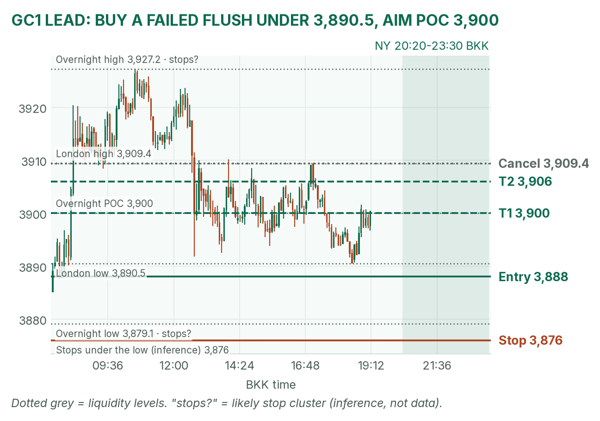
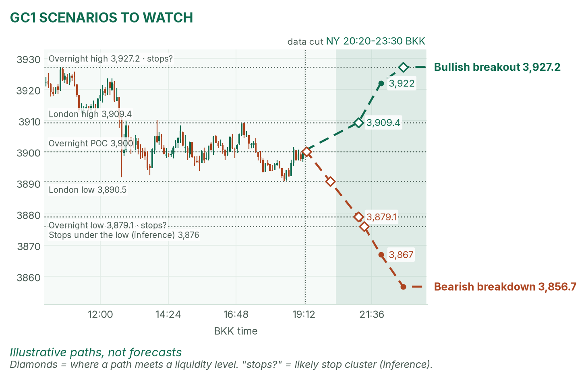
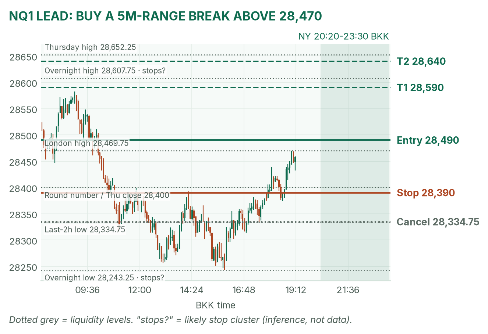
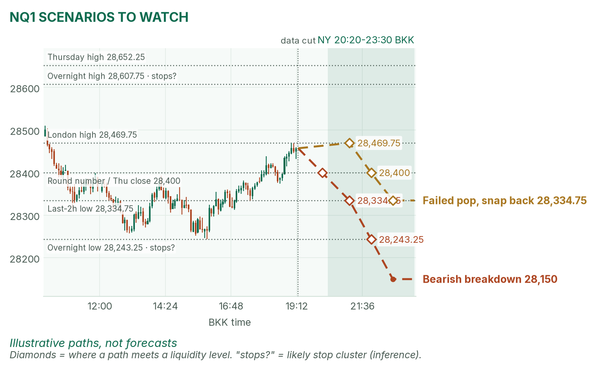

The Nvidia scare has calmed (+3.05% premarket), but the bond market hasn't. The 10-year yield is up 3 basis points to 5.133%, and the dollar sits near a 19-month high on bets of a December hike (April, CNBC, Reuters). Higher yields weigh on gold, which pays no interest: its Asia bounce to 3,927.2 faded back near 3,899.
Today's hinge is PPI (producer prices, what businesses get paid), at 20:30, ten minutes into the window. Remember priced-in: the hike is already expected, so only a surprise moves price. My bias: gold soft but stretched near its lows; Nasdaq neutral, mid-range.
News (BKK)
Time
Event
Forecast
Prior
Read
20:30
October PPI (m/m)
+0.4%, core +0.3%
+1.3%, core +0.7%
Hot (above): yields up, gold and NQ lower. Cold (below): relief for both.
20:30
Chicago Fed's Goolsbee (CNBC)
–
–
Lands with PPI.
21:10
Boston Fed's Collins
–
–
Hawkish words add pressure.
21:30
US cash stock open
–
–
NQ's 5-minute range forms.
21:40, 22:50
Fed's Logan; Bowman
–
–
Second-tier.
No whisper number found; past PPI move sizes not measured this run. Source: April's brief (Investing.com, Wrightson ICAP, Federal Reserve).
Levels to watch
Level
GC
NQ
Thursday settle (April)
3,885.3
28,384.50
Overnight high (since 06:00)
3,927.2
28,607.75
London high / low (since 15:00)
3,909.4 / 3,890.5
28,469.75 / 28,243.25
Overnight POC
3,900
28,570
Overnight value area
3,886–3,922
28,270–28,570
Overnight low
3,879.1
28,243.25
Thursday high / low
4,005.9 / 3,856.7
28,652.25 / 28,013.75
Expected NY range (4-session median)
about 63 points
about 570 points
Gold (GC1)
Bias: soft, but sitting on its 3,900 POC (the busiest price overnight) near the bottom of a 3,886–3,922 value area (where 70% of volume traded). The NY rule fades the COMEX range back to the POC.
The trade: buy the failed flush
Entry
3,886–3,890 (plan 3,888), after 20:32, only after a dip under the 3,890.5 London low stalls above the 3,879.1 overnight low
Stop
3,876, under the overnight low, where sellers' stops likely sit (inference)
Targets
1R partial 3,900 (POC) · T2 3,906 (1.5R), under the 3,909.4 London high
Cancel
Trades above 3,909.4 before the fill, a 5m close below 3,879.1, or no fill by 22:30
Probability
~33%, an estimate. Basis: GC NY opening ranges mostly failed and reverted in my 42-session study (not significant); buying against rising yields shades it down.
A hot PPI that keeps falling through 3,879.1 is a breakdown, not a flush; no long then. April partly agrees: gold "sits near the bottom" of its range, but yields "still weigh on gold."

GC 5-minute bars into 19:15. Asia bounce faded to the POC.

Illustrative paths, not forecasts.
Scenarios to watch
Bullish breakout (cold PPI): a 5m close above 3,909.4. Aims for 3,922, then the 3,927.2 overnight high.
Bearish breakdown (hot PPI): a 5m close below 3,879.1. Aims for about 3,867, then Thursday's 3,856.7 low.
Nasdaq (NQ1)
Bias: neutral. NQ bottomed at 28,243.25 around 15:55 and climbed back to the 28,470 London high on Nvidia's bounce. The NY rule: trade breakouts of the 21:30–21:35 range. After about 22:00, stay long only above VWAP (the volume-weighted average price).
The trade: bullish range breakout
Entry
Buy stop 28,490, above the 28,469.75 London high, after 21:32. Use the 21:30–21:35 range high plus 2 points if it is higher.
Stop
28,390, under the 28,400 round number and Thursday's settle
Targets
1R partial 28,590 · T2 28,640 (1.5R), past the 28,607.75 overnight high
Cancel
Trades below 28,334.75 (last-two-hours low) before entry, or no break by 22:30
Probability
~35%, an estimate. Basis: NQ 5-minute breakouts averaged +0.37R over 31 sessions (not significant).
Why: sellers' stops likely sit over the London high (my inference). A hot PPI or hawkish Fed talk can kill the break; if PPI is hot, stand aside on longs. April is neutral: Nasdaq "sits mid-range".

NQ 5-minute bars into 19:15. A V-shaped recovery into the London high.

Illustrative paths, not forecasts.
Scenarios to watch
Bearish breakdown: a 5m close below 28,334.75. Aims for the 28,243.25 overnight low, then about 28,150.
Mean reversion: a pop over 28,469.75 that closes back under it. Aims for 28,400, then 28,334.75.
6E (not traded): 1.1064, near its 1.10595 overnight low as the dollar firms.
Before you click
ORB bases. GC NY: 20:20 COMEX open until a 2-minute candle's volume drops below half the first two's average, fade to POC. NQ NY: 21:30–21:35 range, trade breakouts. GC and 6E London: 15:00–15:30 range (fade gold, break the euro).
Checklist. 1) Room to today's max loss? 2) Within daily rules? 3) No release within 30 minutes? 4) Agrees with the bias? 5) At a marked level? 6) Setup tagged? 7) Entry, stop, 1R partial, target set? 8) Calm, not chasing?
Reset (60 seconds). Hands off the mouse. Breathe in 4, hold 4, out 6, five times. Name the feeling in one word. "Eager" or "frustrated"? Wait 5 minutes.